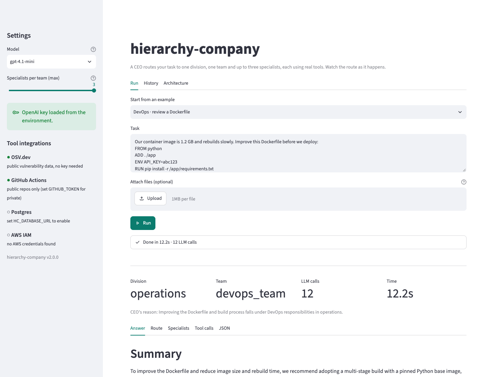

Manual triage and handoffs
Engineers and technical leads must translate open-ended requests into a focused review. General-purpose AI advice can make ownership and supporting evidence difficult to follow.
An AI organization that routes engineering requests to specialized agents, runs real analysis tools, and makes every handoff visible.
PYTHON · LANGGRAPH · LANGCHAIN · OPENAI · STREAMLIT
A slow database query, a risky deployment and a leaked credential need different expertise. Before the work can start, someone has to classify the request, collect context and decide who should investigate.
Engineers and technical leads must translate open-ended requests into a focused review. General-purpose AI advice can make ownership and supporting evidence difficult to follow.
A CEO selects a division. A director selects one team. Its supervisor consults specialists equipped with tools for that domain, then the hierarchy synthesizes an answer.
Reduce manual sorting and expose the path behind a recommendation: who was consulted, which tools ran and where information was missing.
Why build this? To test whether organizational delegation can make AI-assisted engineering triage more focused and controllable. This is a working local prototype; routing and execution are measured, while business ROI and production productivity gains are not.
A Streamlit interface makes the workflow tangible, with the same execution API available through Python and the CLI.

call_operations,
call_security_team) maps parent state into the child graph and returns only the child's new
trace entries. The trace in the panel is the one this route produces for “An AWS key was committed to GitHub”.
Only one team and at most three of the 18 specialists do any work in a run.team_writer without asking the model at all.UNAVAILABLE with the reason, and the
specialist is instructed to report that rather than guess.Python provides the application foundation. LangGraph controls delegation; domain tools supply evidence; Streamlit exposes the execution to a human reviewer.
| Layer | Technologies | Role in this project |
|---|---|---|
| Runtime & packaging | Python 3.11+, Hatchling, uv/pip | Typed application code, package builds, isolated environments and CLI entry points. Python 3.12 is used in the setup below. |
| Graph orchestration | LangGraph 1.x | Nine composed state graphs, conditional routing, shared state and bounded execution. |
| Agents & model access | LangChain 1.x, langchain-core, langchain-openai, OpenAI | Tool-calling specialists, message/callback interfaces and structured routing decisions; default model: gpt-4.1-mini. |
| Validation & settings | Pydantic 2, Python dataclasses, python-dotenv | Enum-constrained routing schemas and validated environment configuration. |
| Application UI | Streamlit (optional) | Streaming run events, file attachments, specialist notes, session history and JSON downloads. |
| HTTP & integrations | HTTPX, OSV.dev API, GitHub REST API | Vulnerability lookups and GitHub Actions workflow status, with explicit failure reporting. |
| SQL & data | SQLGlot, optional Psycopg 3 / PostgreSQL, pg_stat_statements | SQL AST analysis, read-only query plans, catalog inspection and slow-query statistics. |
| Cloud integration | Optional boto3 / AWS IAM | Access-key last-used lookup via the AWS credential chain; local IAM policy analysis works without AWS. |
| Parsing & analysis | PyYAML, Python ast, HTMLParser, XML, regex, colorsys | Manifest and Compose parsing, source inspection, test-report parsing, secret detection and WCAG contrast calculations. |
| Verification | pytest, pytest-cov, Streamlit AppTest | Offline tests, coverage, UI checks and an opt-in live OpenAI test suite. |
| Static quality | Ruff, mypy, types-PyYAML | Linting, import hygiene and type checking. |
| Documentation & delivery | HTML, CSS, SVG, Markdown, Git / GitHub Pages, custom Python SDLC gates | Reproducible architecture diagrams, a static project showcase, change history and evidence-based release checks. |
Inventory verified against pyproject.toml and application source.
Supported domains: React/JSX, HTML/CSS, WCAG 2.1, REST/OpenAPI 3, JWT, Docker/Compose, Kubernetes and GitHub Actions are analyzed or generated by tools. They are not the application's runtime stack, and the app does not deploy workloads.
python -m gates runs the checks for each
SDLC phase in order and stops at the first NO-GO. The red markers are the NO-GO decisions that actually happened
while this project was built; each was fixed and the gate re-run before work moved on.159 offline tests and 42 live tests passed in the saved v2.1.0 validation run. Six reference tasks routed to the expected teams with 8–12 LLM calls per run.
Recorded evidence: gate report · reference runs. These figures are a saved snapshot, not a live status feed or an answer-quality score.
| Suite | What it proves | Tests | Result |
|---|---|---|---|
| Unit · tools | Each of the 36 tools gives the right answer on real inputs, fails honestly, and never touches the network on bad input | 89 | passed |
| Unit · graphs | Turn cap, no repeated specialist, one team per run, full 4-level trace order | 11 | passed |
| Unit · prompts, config, CLI | Routing prompts, schemas, settings validation, --attach, error handling | 38 | passed |
| Unit · stream + UI | Event stream order; the Streamlit page rendered headlessly: run, history, errors, key never shown | 18 | passed |
| Unit · quality | No secrets in the source, ruff clean | 3 | passed |
| Live · company | Six reference tasks end to end on gpt-4.1-mini | 6 | passed |
| Live · routing | CEO, director and supervisor decisions on 25 further tasks | 25 | passed |
| Live · OpenAI | Auth, enum-constrained output, real tool calls, call counting | 6 | passed |
| Live · tool honesty | Computes from supplied data, asks for missing files, reports unconfigured databases | 4 | passed |
| Live · UI | The real Streamlit page runs the IAM example against OpenAI | 1 | passed |
| ID | Task | Division | Team | LLM calls | Time |
|---|---|---|---|---|---|
| T1 | Our React checkout page fails WCAG contrast checks and re-renders too often. | engineering | frontend_team | 11 | 12.2s |
| T2 | Design a JWT-based auth flow for our REST API split into microservices. | engineering | backend_team | 11 | 14.1s |
| T3 | This Postgres query on the orders table takes 9 seconds; fix the schema/indexes. | engineering | database_team | 12 | 11.5s |
| T4 | Build a regression test plan for the payment module before release. | operations | qa_team | 10 | 10.7s |
| T5 | Containerize our Flask app and deploy it to Kubernetes with a CI/CD pipeline. | operations | devops_team | 12 | 14.1s |
| T6 | An AWS key was committed to GitHub; assess the IAM blast radius and remediate. | operations | security_team | 8 | 10.0s |
Every run finished with all three answer sections (Summary, Details, Routing Path), no specialist consulted twice, and no claim that an action had been carried out. These reference tasks supplied no files; specialists mostly requested artifacts. They validate routing and structure, not end-to-end analysis quality.
UNAVAILABLE and INPUT NEEDEDRequirements, architecture decisions, source code and reproducible setup.